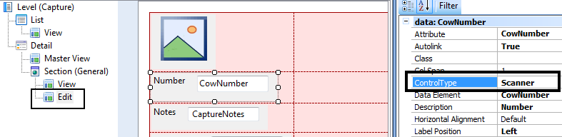

Scanner Control
Reads barcodes and QR codes directly into an attribute or variable in the Panel object's layout.
Scope
Generators: Android, Apple
Controls: Attribute/Variable (Control Type: Scanner)
Properties
Events
CodeRead event
When the control is displayed inline (that is, the Display mode property was set to Inline), each time it reads a code, it will trigger the CodeRead event.
Note that the ControlValueChanged event may also be triggered in some cases when the CodeRead event is triggered. The ControlValueChanged event behaves differently from the CoreRead event on that it:
- is triggered regardless of the Display mode,
- is not triggered if the same code is read twice.
Example:
In the following code, the &scanner variable is on screen, has the Control Type property set to Scanner, and the Display mode property set to Inline. It may also have the Operation mode property set to Continuous read.
The CodeRead event will be triggered each time a code is read. The example bellow adds the code read to a collection, and also displays a toast message showing the code.
Event &scanner.CodeRead
Composite
&CodesCollection.Add(&scanner)
msg( format('Scanner read code %1', &scanner), nowait)
EndComposite
Endevent
Using the control
Just go to the relevant WorkWithDevices<Object>.Edit instance, select the attribute, and set Scanner for the Control Type property.
.
Notes
- The iOS simulator provided by XCode does not have any camera integrated to test Scanner control. If you want to access the camera you need a physical device.
- It scans the most common of linear barcodes and matrix barcodes variants (e.g. QRCodes, EAN-13, etc).
See also
Videos
 Controls: Maps, Rating, Smart Grids, Switch
Controls: Maps, Rating, Smart Grids, Switch
Conceptual model of mobile applications
Architecture of Online applications
Container of sections in the Detail screen of the Work With